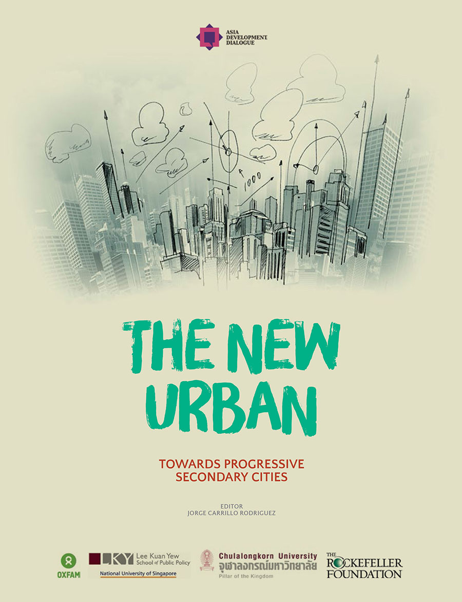
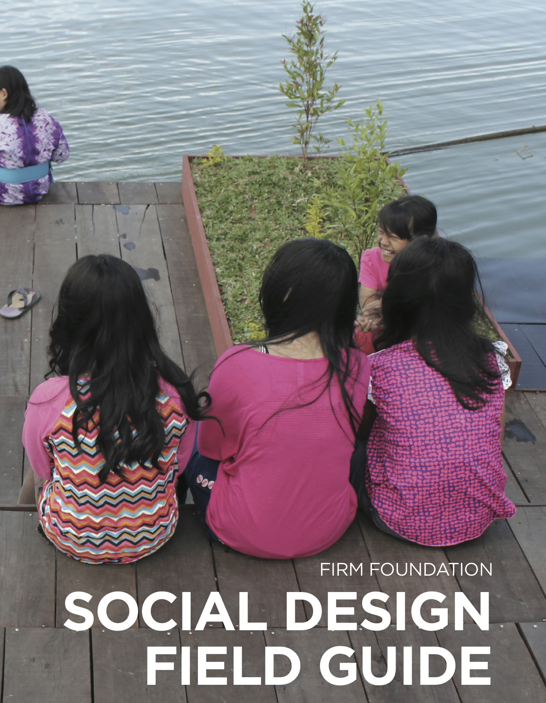
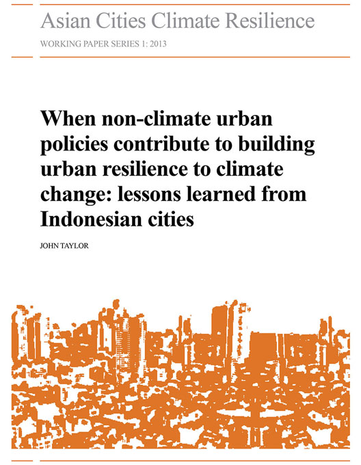
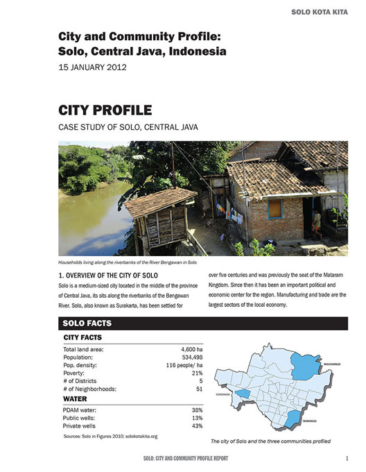
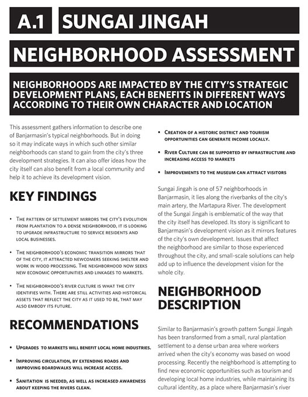
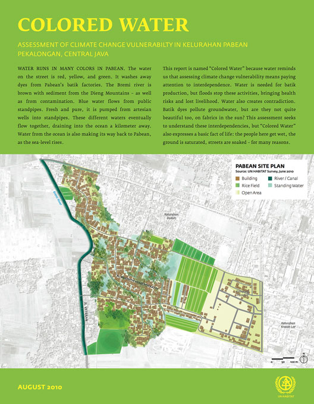

Our Publications



Doing More with Less – Resource Challenges for Secondary Cities in South-East Asia The New Urban: Towards Progressive Secondary Cities
OXFAM, 2014


Social Field Design Guide A Handbook from Experiences in Participatory Design in Indonesia
Kickstarter Campaign, 2014


When non-climate urban policies contribute to building urban resilience to climate change: lessons learned from Indonesian cities Asian Cities Climate Resilience Working Paper Series
IIED, 2013

City and Community Profile: Solo, Central Java, Indonesia Participatory Approaches to Community Water Management
National University of Singapore, 2013



Banjarmasin Neighborhood Assessment Sungai Jingah Neighborhood Assessment
UN HABITAT, 2012


Informal Public Transportation Networks in Three Indonesian Cities Jogyakarta, Solo, Palembang
CDIA, 2011


Padang House by House: A Housing and Vulnerability Assessment Padang, West Sumatra
Mercy Corps, 2010

Colored Water Assessment of Climate Change Vulnerability in Kelurahan Pabean, Pekalongan, Central Java
UN HABITAT, 2010

Solo Kota Kita Facilitator Manual A Facilitator's Guide to Using a Mini Atlas
Kota Kita, 2010